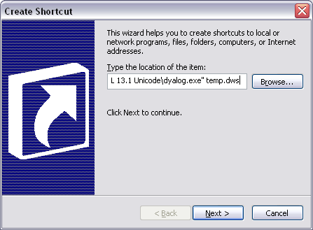
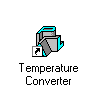

Now that we have a final working application, it would be nice to add it as a shortcut, so that the user can run it from the Start Menu or from the Desktop, like any other application.
First we need to define ⎕LX so that the application starts automatically.
⎕LX ← '⎕DQ''.'''
or, to avoid so many confusing quotes...
⎕LX ← ⍞ ⎕DQ '.'
Next, it would be a good idea to clear the edit fields and ensure that the scrollbar is in its default position:
'TEMP.F' ⎕WS 'Text' '' 'TEMP.C' ⎕WS 'Text' '' 'TEMP.S' ⎕WS 'Thumb' 1
Then we must )SAVE the workspace...
)SAVE TEMP TEMP saved ...
... and exit APL
)OFF
The next step is to add the application to the Desktop. This is done in the normal way, i.e.
Right-click on the Desktop and choose "New" followed by "Shortcut".
Type in the appropriate command line, such as:
"C:\Program Files\Dyalog\Dyalog APL 13.1 Unicode\dyalog.exe" temp.dws

Select "Next" and give the application a name, then select "Finish".
The resulting icon is shown below. Note that although by default you will get a standard Dyalog APL icon, you could of course select another one from elsewhere on your system.

Clicking on this icon will start your application. Notice that the APL Session Window will NOT appear at any stage unless there is an error in your code. All the user will see is your "Temperature Converter" dialog box.